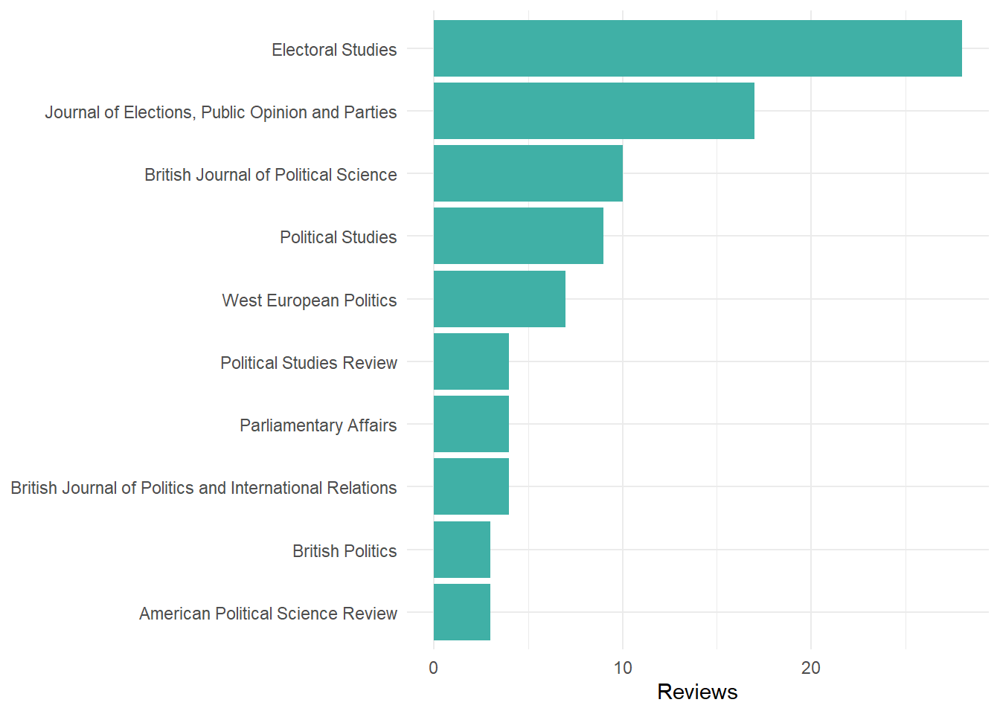

Like many academics I do a lot of reviewing of academic journals. I also like to slightly pointless measure things and keep track of them, so here is a record of more journal reviewing.1
I reviewed my first paper for a journal in 2012, and since then I have reviewed 142 submissions for 46 different journals.
Here’s a plot of how many reviews I’ve done over time:
And here are the ten journals I’ve reviewed for the most:

I’ve also reviewed seven book proposals for four different publishers, and six grant proposals for four different funding bodies.
I’m almost always happy to review things if they about something I know about, so if you’re looking for someone to review something, feel free to get in touch, especially if you’re a book publisher who’ll give me free books in return. I love books.2
See also: keeping track of various metrics on my smart watch and my 700+ wine rating on Vivino.
When my eldest daughter was born I tried to keep track of things like feeding, naps, and sleep. Once I had enough data I tried to do some analysis to see what would lead to more sleep. Unfortunately it turns out babies are entirely random processes.↩︎
I worked in a bookshop for five years, which has left me with the habit of buying more books than I ever have time to read, something you will discover for yourself if you ever come to my office.
A couple of years ago I started pointless keeping track of the (non-work) books I read on the Story Graph, so if you want to know what I’ve been reading lately, take a look. Also feel free to talk to me about any of the books I’ve read!↩︎